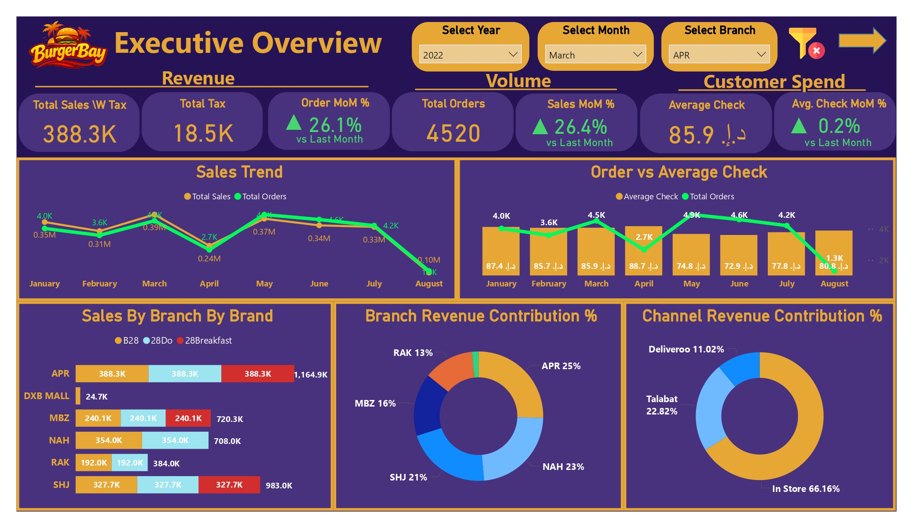
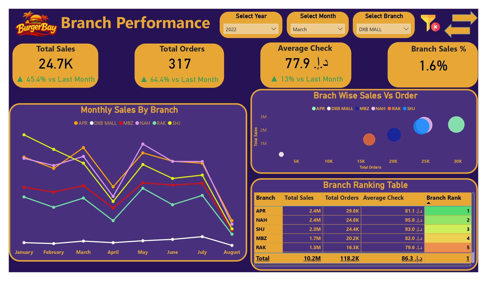
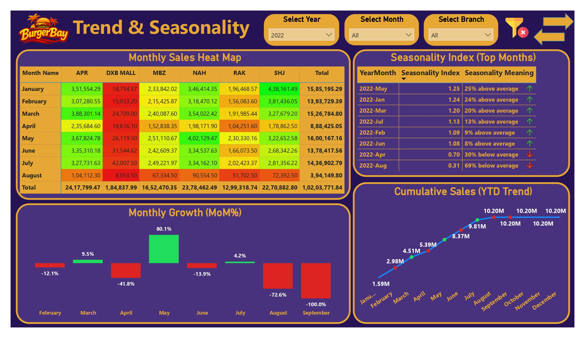
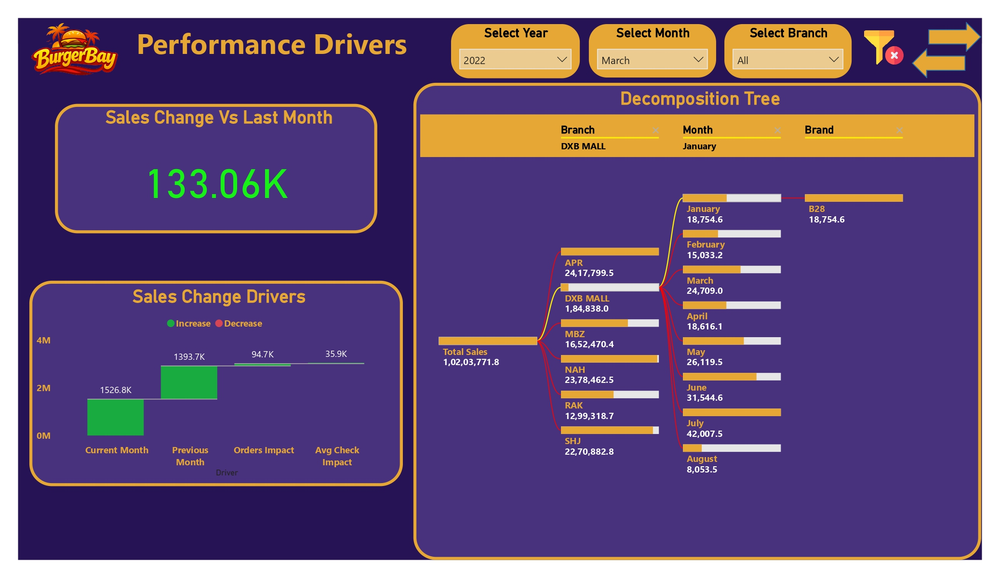
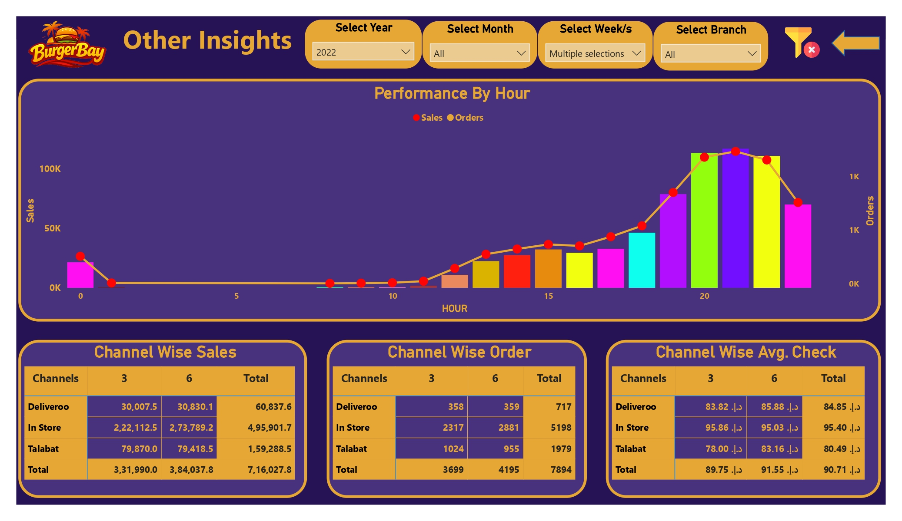

Static Spreadsheet Reporting
Existing reports lacked analytical depth, dynamic filtering, and driver-based explanations.
Developed a multi-layer Power BI analytics solution for a UAE-based fast-food business, transforming Oracle ERP sales data into executive, branch, seasonality, revenue-driver, channel, staffing, and inventory intelligence.
Leadership relied on static spreadsheets that reported outcomes but could not explain sales drivers, branch efficiency, seasonality, channel dependence, or the operational causes behind revenue changes.
Existing reports lacked analytical depth, dynamic filtering, and driver-based explanations.
Leadership could not determine whether month-over-month changes were caused by seasonality, order volume, or pricing.
The business could not distinguish high-volume, low-efficiency branches from locations with stronger average checks and premium-sales potential.
Management lacked a clear view of in-store and delivery dependence, transaction volume, and channel profitability patterns.
Store teams lacked hourly demand intelligence for aligning labor schedules and inventory budgets with peak and low-demand periods.
A centralized relational model and five-layer Power BI suite converted point-of-sale data into diagnostic and operational intelligence.
Cleaned and unified point-of-sale datasets from Oracle ERP and Oracle Database into a low-latency star schema.
Advanced DAX automated month-over-month growth and year-to-date cumulative performance benchmarks.
A mathematical seasonality model separated recurring demand patterns from branch-specific operational issues.
A Waterfall model split revenue movement into Orders Impact and Average Check Impact.
Scatter analysis compared sales, order volume, average check, contribution, and monthly trends across locations.
Daily and hourly matrices revealed peak demand, low-demand windows, and branch-specific operating patterns.
In-store and delivery channels were compared across revenue, order volume, and average check.
Delivered executive overview, branch intelligence, trends and seasonality, driver analysis, and operational intelligence.
Executive, branch, trend, driver, and operational views supported strategic and tactical decision-making.
Seasonality analysis revealed months performing materially above average, supporting targeted marketing, staffing, and inventory planning.
The analysis quantified dependence on in-store revenue and highlighted the need for a more balanced channel strategy.
Revenue movement was separated into order-volume impact and average-check impact.
Revenue growth was shown to depend primarily on customer traffic and order volume rather than price increases, guiding marketing toward customer acquisition.
High-volume branches could focus on throughput and efficiency, while high-average-check branches such as NAH and APR could prioritize premium upselling.
Peak-hour and low-demand windows supported improved staff scheduling, reduced idle labor, and better inventory allocation.
Management gained clearer insight into in-store dependence and delivery performance across volume and profitability dimensions.
Quantification note: The supplied documentation did not include measured cost savings or margin improvement. The quantified impact above reflects documented dashboard findings and analytical scope only.
Oracle sales data is modeled and enriched with time intelligence, seasonality, and driver decomposition before delivery through interactive Power BI dashboards.
Oracle ERP and point-of-sale data
Clean, standardize, and unify
Star schema and branch relationships
MoM, YTD, seasonality, drivers
Growth, branches, channels, staffing, inventory
The analytical flow moves from raw sales records to decision-ready commercial and operational intelligence.





Explore the complete project documentation, Oracle SQL data model, Power BI dashboards, DAX calculations, business insights, and supporting assets used to build the Multi-Branch QSR Sales & Operational Performance Intelligence Platform.
Discover more industry transformation and enterprise analytics projects.